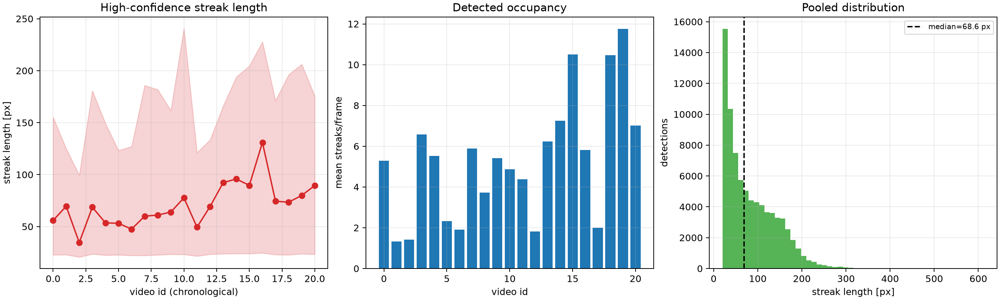
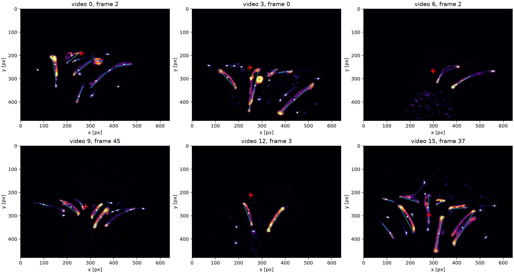
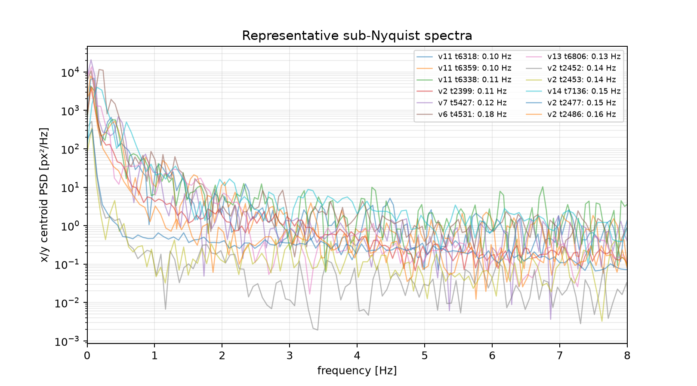
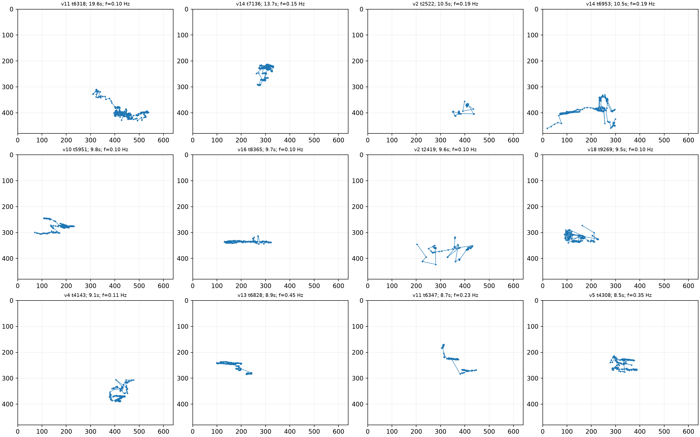
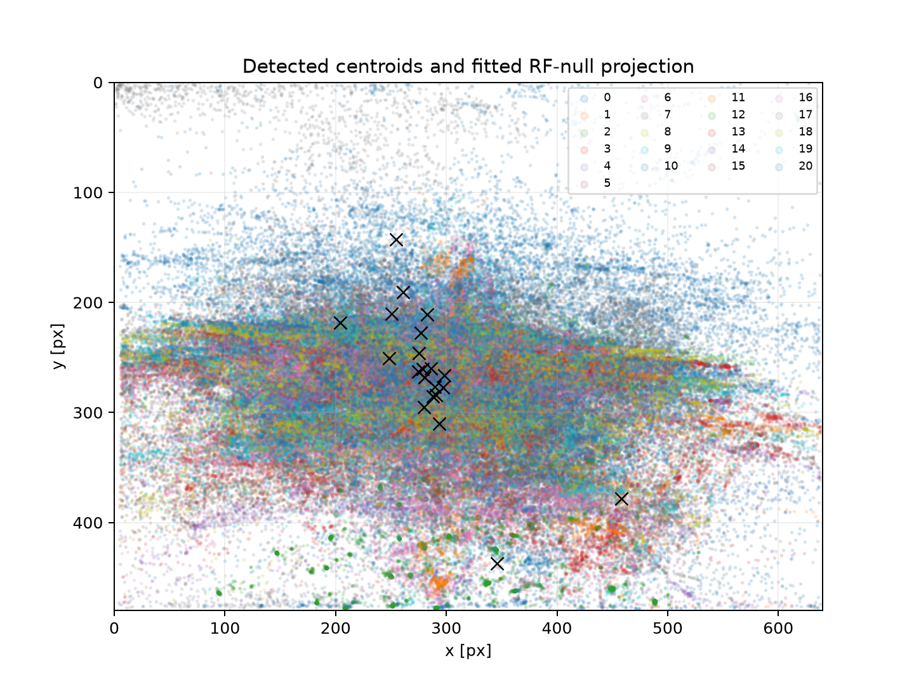
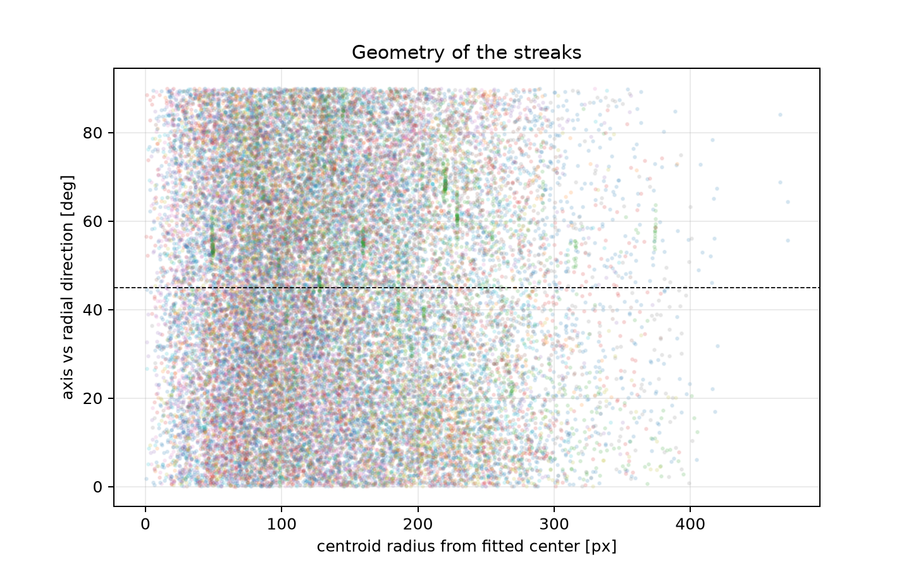
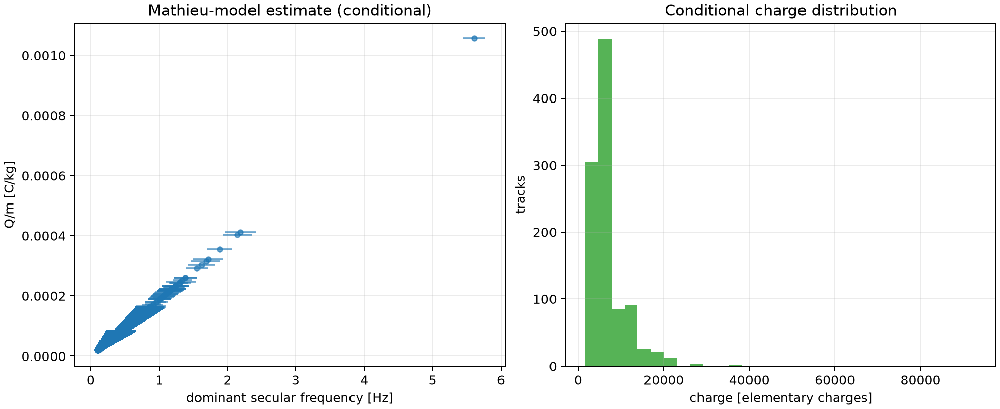

Caso 4 — reanálisis de videos de micromoción
Trampa de Paul anular · licopodio · análisis full-frame reproducible con el formato GPT-6-Luna
Resumen cuantitativo
- Duración nominal total: 732.2 s; frecuencia de video: 21.4571 ± 0.0207 Hz.
- Detecciones totales: 176,526; alta confianza: 79,243 (44.9%).
- Longitud mediana: 68.60 px; P05–P95: 23.00–187.31 px.
- Tracks: 10,433; candidatos espectrales preliminares: 1,036; aceptados físicamente: 0.
Comparación por video
Las trazas de la tabla son componentes detectadas y filtradas por calidad. Pueden corresponder a la misma partícula en cuadros sucesivos; no son observaciones independientes.
| Video | Trazas alta confianza | Longitud mediana | Media trazas/frame | Área mediana | Estado físico |
|---|---|---|---|---|---|
| WIN_20260624_14_48_04_Pro.mp4 | 11138.0 | 55.9 px P05–P95: 22.8–155 px | 5.28 | 640 px² | Descriptivo; no es una medición de carga |
| WIN_20260624_14_50_41_Pro.mp4 | 594.0 | 69.6 px P05–P95: 22.9–125 px | 1.32 | 728.5 px² | Descriptivo; no es una medición de carga |
| WIN_20260624_14_51_58_Pro.mp4 | 2190.0 | 34.6 px P05–P95: 20.7–99.5 px | 1.42 | 308 px² | Descriptivo; no es una medición de carga |
| WIN_20260624_14_53_43_Pro.mp4 | 6132.0 | 68.6 px P05–P95: 23.5–181 px | 6.58 | 820 px² | Descriptivo; no es una medición de carga |
| WIN_20260624_14_54_49_Pro.mp4 | 3682.0 | 53.6 px P05–P95: 22.4–149 px | 5.52 | 589 px² | Descriptivo; no es una medición de carga |
| WIN_20260624_14_57_38_Pro.mp4 | 1513.0 | 53.1 px P05–P95: 22.7–123 px | 2.32 | 421 px² | Descriptivo; no es una medición de carga |
| WIN_20260624_14_58_34_Pro.mp4 | 1716.0 | 47.6 px P05–P95: 22.2–127 px | 1.91 | 446.5 px² | Descriptivo; no es una medición de carga |
| WIN_20260624_14_59_45_Pro.mp4 | 3824.0 | 60 px P05–P95: 22.2–186 px | 5.88 | 520.5 px² | Descriptivo; no es una medición de carga |
| WIN_20260624_15_00_52_Pro.mp4 | 525.0 | 61.1 px P05–P95: 22.7–182 px | 3.72 | 734 px² | Descriptivo; no es una medición de carga |
| WIN_20260624_15_01_24_Pro.mp4 | 2179.0 | 64 px P05–P95: 23.2–162 px | 5.41 | 630 px² | Descriptivo; no es una medición de carga |
| WIN_20260624_15_02_20_Pro.mp4 | 3817.0 | 77.7 px P05–P95: 23.1–241 px | 4.87 | 882 px² | Descriptivo; no es una medición de carga |
| WIN_20260624_15_03_57_Pro.mp4 | 2558.0 | 49.4 px P05–P95: 21.6–121 px | 4.37 | 395 px² | Descriptivo; no es una medición de carga |
| WIN_20260624_15_04_54_Pro.mp4 | 734.0 | 69.3 px P05–P95: 23.3–133 px | 1.82 | 666 px² | Descriptivo; no es una medición de carga |
| WIN_20260624_15_06_06_Pro.mp4 | 4212.0 | 92.3 px P05–P95: 23.8–166 px | 6.23 | 919 px² | Descriptivo; no es una medición de carga |
| WIN_20260624_15_07_04_Pro.mp4 | 6473.0 | 95.9 px P05–P95: 24–194 px | 7.25 | 1143 px² | Descriptivo; no es una medición de carga |
| WIN_20260624_15_08_05_Pro.mp4 | 7896.0 | 89.6 px P05–P95: 24–205 px | 10.5 | 1043 px² | Descriptivo; no es una medición de carga |
| WIN_20260624_15_09_48_Pro.mp4 | 3420.0 | 131 px P05–P95: 24.5–228 px | 5.82 | 1877 px² | Descriptivo; no es una medición de carga |
| WIN_20260624_15_10_37_Pro.mp4 | 2128.0 | 74.4 px P05–P95: 23–171 px | 1.99 | 719 px² | Descriptivo; no es una medición de carga |
| WIN_20260624_15_12_03_Pro.mp4 | 5823.0 | 73.5 px P05–P95: 22.8–196 px | 10.5 | 787 px² | Descriptivo; no es una medición de carga |
| WIN_20260624_15_13_34_Pro.mp4 | 4821.0 | 79.9 px P05–P95: 23.8–206 px | 11.8 | 921 px² | Descriptivo; no es una medición de carga |
| WIN_20260624_15_14_39_Pro.mp4 | 3868.0 | 89.5 px P05–P95: 23.3–176 px | 7.01 | 938 px² | Descriptivo; no es una medición de carga |
Qué hice
- Leí los 21 MP4 con OpenCV y usé la frecuencia declarada por cada contenedor.
- Extraje el canal rojo, sustraje un fondo gaussiano de σ=15 px, umbralé a 20 cuentas y cerré huecos de 3×3 px.
- Calculé centroide ponderado, PCA, orientación, área, cuerda, longitud de línea central y curvatura por componente.
- Asocié centroides con asignación húngara, distancia máxima 70 px y tolerancia de 2 frames.
- Usé como alta confianza área ≥100 px², longitud ≥20 px, pico ≥60 y aspect ratio ≥1,5.
- Calculé periodogramas de las trayectorias largas. El criterio final exige duración ≥5 s, residuo relativo ≤0,70 y un pico separado al menos 3 bins de resolución.
Modelo físico y límites
El modelo ideal de Mathieu usado como referencia es:
x¨ + [Q V_AC/(m r₀²)] cos(Ωt) x = 0q = 2 Q V_AC/(m r₀² Ω²)
En q pequeño, ω_sec ≈ |q|Ω/(2√2) y |Q/m| = |q|r₀²Ω²/(2V_AC).
Con V_AC=1175 V, f_RF=50 Hz y r₀=8,9 mm, la conversión condicional sería Q/m = 0,00332669·q C/kg. Sin una frecuencia secular aceptada, no se puede convertir de manera defendible a q, Q/m, carga, rigidez, energía o temperatura.
La escala condicional r₀/P95 da 0.03122 mm/px y una longitud mediana de 2.142 mm por exposición. El tiempo de exposición no está en los MP4; si se fuerza τ=1/fps, la velocidad mínima equivalente sería 46.0 mm/s.
Decisiones y limitaciones
- La cámara muestrea a ~21,46 Hz, por debajo de Nyquist para la excitación RF de 50 Hz.
- Los centros geométricos exploratorios tienen residuos de 39.0–146.1 px; no se interpretan como un nulo RF confiable.
- No se conocen escala métrica, exposición, densidad, forma, carga ni orientación 3D de las esporas.
- Las trazas fusionadas, cruces, reflejos y background residual pueden sesgar la longitud y el tracking.
Figuras







Archivos reproducibles
Empaquetado y generación del informe · Pipeline full-frame · Tabla CSV · Resumen JSON · Hoja de cuadros

Los MP4 originales no se incluyen en esta carpeta. Los CSV detallados generados en el workspace permanecen en results/; aquí se conserva el formato compacto de presentación equivalente al caso 1.